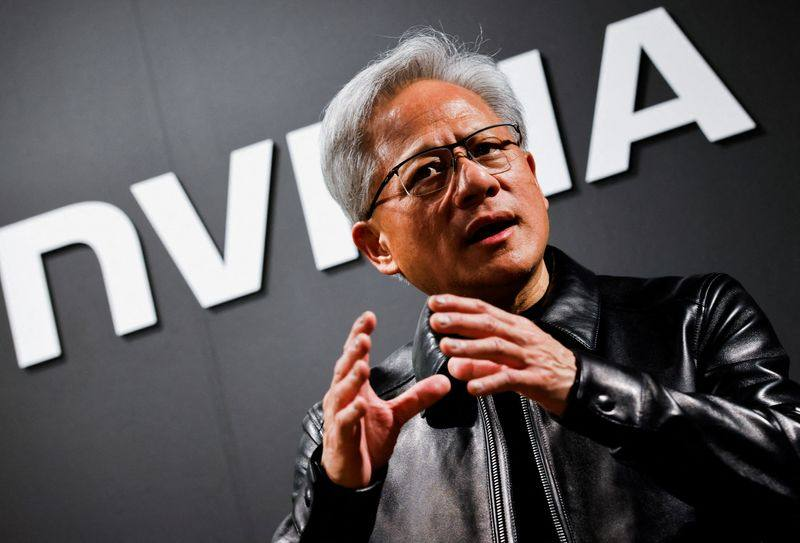

Jensen Huang Weighs Nvidia Comeback Days After Resigning, FT Reports
Jensen Huang is weighing a return as Nvidia chief executive days after resigning, the Financial Times reported on November 15, with allies building a Silicon Valley lobbying campaign to press the board and the White House. The board's own investigation is unfinished, Treasury Secretary Bessent wants an outside CEO, and Nvidia reports earnings on Tuesday under interim chief Colette Kress.

- 01THE EXIT — On November 12, Huang resigns as president, chief executive and director after revelations of extramarital affairs, including one involving a woman US officials suspect of spying for China. Chief financial officer Colette Kress becomes interim chief executive, and the board opens an independent investigation.
- 02THE LOBBY — On November 15, the Financial Times reports Huang has discussed a return with confidants. An ally is assembling Silicon Valley executives into a "war room" to lobby the board and seek White House support, with backing from Elon Musk, Tim Sweeney and Nvidia shareholders. Treasury Secretary Scott Bessent counters that Nvidia needs "a dramatic shakeup" and an outside chief executive.
- 03THE DECISION — Only the board can appoint a chief executive, and its succession process remains at the search-firm selection stage. Nvidia reports third-quarter results on Tuesday, November 17, under Kress, and Huang is expected to testify before Congress. No board decision on a return has been reported.
WHAT HAPPENEDWhat Happened
Jensen Huang is considering a return as Nvidia's chief executive, days after resigning, the Financial Times reported on Sunday, November 15, 2026, citing people familiar with the matter. Huang has discussed the possibility of returning with confidants, the newspaper said.
One Huang ally told the FT they were putting together a "war room" of Silicon Valley executives to lobby for the former chief executive's return and would try to garner support from the White House. "Everyone that matters in tech outside the frontier labs loves Jensen," the person said, adding that the efforts had Huang's support.
Nvidia and Huang's spokespeople declined to comment to the FT, and Nvidia did not immediately respond to a request for comment from Reuters. The report comes days after the FT reported that Nvidia's board had approached Arm chief executive Rene Haas in its search for a potential successor.
WHY IT MATTERSA comeback campaign three days after a scandal exit
Huang stepped down on Thursday, November 12, after revelations of extramarital affairs, including one involving a woman US officials suspect of spying for China, raising questions over exports of advanced AI chips to China. A founder weighing a return three days later, with allies organizing a lobbying campaign, is extraordinary even by Silicon Valley standards.
The campaign is running against the board's own process. The board has hired Wachtell Lipton to run an independent investigation into Huang's conduct, and Huang is expected to testify before Congress. The board said it was still selecting a search firm for a permanent successor, and only the board can appoint a chief executive.
WHAT TO WATCHThe split inside the administration, and Tuesday's earnings
The lobbying effort has public backing from Elon Musk and Epic Games chief executive Tim Sweeney, who support an open letter calling on the board to bring Huang back, and from Nvidia shareholders and employees. But Treasury Secretary Scott Bessent said on Sunday that Nvidia needs "a dramatic shakeup" and should hire an outside chief executive, a direct counterweight to the comeback campaign.
Nvidia reports third-quarter results on Tuesday, November 17, its first under interim chief executive Colette Kress, who has scheduled a company-wide meeting for Wednesday. The watch items are whether the board's inquiry concludes, whether the search-firm process continues, and whether the White House responds to the lobbying effort.
SIGNAL JUDGMENT — ANALYSISThe comeback talk is a lobbying campaign, not a decision
Tokenta Signal's judgment: a "war room" can pressure a board, it cannot appoint a chief executive. The board holds the appointment power, its Wachtell Lipton inquiry is unfinished, and the administration is split, with Bessent calling for a dramatic shakeup while allies lobby the White House. The comeback story matters because it turns the succession into a public contest three days before earnings, but until the inquiry concludes or the board speaks, it is pressure, not a return. Watch the inquiry and Tuesday's call, not the open letter.
WHAT REMAINS UNCERTAINWhat Remains Uncertain
EVIDENCEEvidence
Reuters' account of the Financial Times report, read November 15, 2026: Jensen Huang is considering a comeback as Nvidia's chief executive and has discussed the possibility with confidants, while an ally assembles a group of Silicon Valley executives to lobby the board and seek White House support.
PRIMARY SOURCESPrimary Sources
- Reuters: Jensen Huang discusses comeback as Nvidia CEO with allies, FT reports
https://mymixfm.com/2026/11/15/jensen-huang-discusses-comeback-as-nvidia-ceo-with-allies-ft-reports/ - InvestingLive: Jensen Huang weighs Nvidia comeback days after quitting over scandal, FT reports
https://investinglive.com/stocks/jensen-huang-weighs-nvidia-comeback-days-after-quitting-over-scandal-ft-reports/ - TradingView: Jensen Huang discusses possible return as Nvidia CEO as allies rally support
https://www.tradingview.com/news/moodys:a7708dffce5c6:0-jensen-huang-discusses-possible-return-as-nvidia-ceo-as-allies-rally-support/